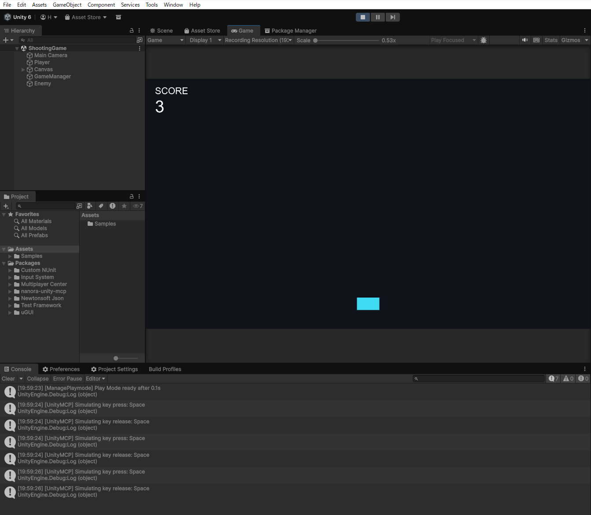

サーバーは Unity Editor の中で動きます。Node.js・Python・別のサーバーは要りません。Claude Code の設定ファイル（.mcp.json）も自動で書きます。
「表示されるまで待つ」「この値か検証する」「キーを押して動かす」を AI が自分で。変更が本当に反映されたかを確かめる Claude Code 用 Skill を同梱。
ポートはプロジェクトごとに決まった番号。AI はつながった先のプロジェクト名を確かめられるので、別の Unity を触りません。
シアンの 4 つは、手順を並べた E2E テスト・スクリーンショットの差分比較・FPS や描画数の予算チェック・テストレポート。これも全部無料で入っています。
ツールが多すぎて AI が迷うときは、分類だけを見せる省エネモード（SuperSave）に切り替えられます。
1. 入れる
Package Manager ▸ + ▸ Add package from tarball… で同梱の .tgz を選ぶ。必要なパッケージも自動で入ります。
2. 起動する
Unity を開くとサーバーが自動で起動。初回は Setup Wizard が案内します。
3. AI をつなぐ
| Claude Code | プロジェクトのフォルダで claude（設定は自動） |
| Codex | codex mcp add nanora-unity-mcp --url http://127.0.0.1:<PORT>/mcp |
| Cursor など | http://localhost:<PORT>/sse |
まずはサンプルで
Tools ▸ Nanora Unity MCP ▸ Samples ▸ Build Shooting Game Scene
AI に「Play して Space を 5 回押して、スコアを確かめて」と頼んでみる

同梱サンプルを実際に動かした画面と run_e2e_test の出力（Unity 6.3）
| Unity のほかに要るもの | Unity の版 | |
|---|---|---|
| nanora-unity-mcp | なし（Editor の中で完結） | 2021.3 〜 6 |
| unity-mcpCoplayDev | Python 3.10+（uv） | 2021.3 〜 6.x |
| mcp-unityCoderGamester | Node.js 18+ | 6 以上 |
| Unity-MCPIvanMurzak | 別プロセスのサーバー実行ファイル | — |
| Unity 公式 MCPAI Assistant | 中継プログラム、 Unity Cloud 連携、 AI ツールの契約 | 6 以上 |
どれも良いツールです。「Unity だけで完結したい」ならこれ。
各プロジェクトの README・公式ドキュメント（2026-10-19 時点）より
AI のための操縦席。